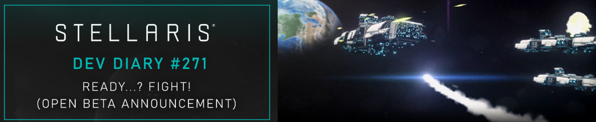

Stellaris

Stellaris Dev Diary #271
3.6 "Orion" Open Beta, Flottans strids förändringar/balansering.
I uppdatering '271' ska sättet man strider på spelet förändras. Förändringarna ska terminera "metan" spelet hamnat i där det inte längre finns anledning för en variad flotta. Istället använder man bara det senaste och största man låst upp,
dessutom har ett flertal av de sjusterbara vapnen ändrat klasser så de blir mer använderbara.